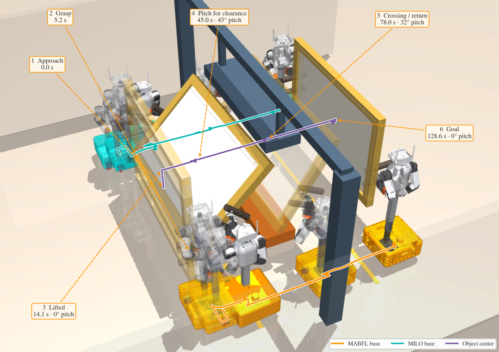

Research Experience
Five labs, and the projects that came out of each
 Space & Terrestrial Autonomous Robotic Systems Lab
Ph.D. Researcher — Prof. Jonathan Kelly
University of Toronto Institute for Aerospace Studies · Toronto
Sep 2021 – Aug 2025Sep 2026 – present
Space & Terrestrial Autonomous Robotic Systems Lab
Ph.D. Researcher — Prof. Jonathan Kelly
University of Toronto Institute for Aerospace Studies · Toronto
Sep 2021 – Aug 2025Sep 2026 – present

Two mobile manipulators carry one load. The planner searches over the grasped assembly rather than the payload alone — counting both carrier footprints narrows admissible yaw through an aperture from 25.8° to 5.5° in the illustrated beam geometry. A 10 Hz object-level MPC drives references that one frozen 50 Hz actor, the same weights on both robots, turns into 21 actions each. Frozen cohort: 35/40 full missions across ten MuJoCo scenes.

A generalized robot–world and hand–eye calibration algorithm that returns a certificate of global optimality rather than a local minimum you have to trust.

Two radars that never see the same thing can still be calibrated: each one's ego-velocity estimate constrains the transform between them, so no overlapping field of view and no targets are needed.

Targetless calibration of the transform and the time offset between a 3D radar and a camera, using continuous-time B-spline trajectories.
 Machine in Motion Lab
Ph.D. Research Fellow — Prof. Ludovic Righetti and Prof. Katsuo Kurabayashi
New York University, Tandon School of Engineering · New York
Sep 2025 – Aug 2026
Machine in Motion Lab
Ph.D. Research Fellow — Prof. Ludovic Righetti and Prof. Katsuo Kurabayashi
New York University, Tandon School of Engineering · New York
Sep 2025 – Aug 2026

A 56-DOF open-source mobile bimanual robot built for $8,722 with no machine shop: holonomic swerve base, 0.635 m lift with a pitching torso, two 7-DOF arms, two 17-DOF tendon-driven ORCA hands, 3-DOF head. Nested compliant whole-body control behind a ZMP tip-over filter, Vision Pro / iPhone / browser teleoperation driving the MuJoCo twin and the robot from one server, and a demonstration-to-policy pipeline (ACT, Diffusion Policy, π0) running onboard.

A geometric diffusion-transformer policy for 26-DOF dexterous pick-and-place: dual-view RGB-D and proprioception to action chunks, trained under geodesic SO(3) and contact-aware fingertip losses on Apple Vision Pro demonstrations retargeted into MuJoCo through SE(3)-preserving optimization.
Also in the lab: mixture-of-experts RL controllers for user-adaptive hip exoskeletons in musculoskeletal simulation.
Dynamic Graphics Project Lab
HCI Researcher — Prof. Daniel Wigdor
University of Toronto, Department of Computer Science · Toronto
Sep 2022 – Aug 2025

A 128-actuator, high-bandwidth toolkit built so a spatialized haptic prototype does not have to start with a soldering iron.

Vibrotactile feedback plus multi-CBF collision avoidance, so the pilot is informed about the obstacles around the drone rather than overruled by the controller.
University of Toronto Robotics Institute
M.Eng. Researcher — Prof. Matthew Mackay and Prof. Ali Bereyhi
Master's thesis · Toronto
Sep 2024 – Aug 2025

A low-cost 6-DOF 3D-printed cinema robot arm on quasi-direct-drive actuation, a vertically integrated ROS stack with a MuJoCo digital twin for sim-to-real, and a goal-conditioned ACT–CVAE visuomotor policy that learns smooth, object-aware camera motion from expert demonstrations.
Neural Robotics Lab Robotics Researcher — Prof. Brokoslaw Laschowski KITE Research Institute, University Health Network · Toronto Sep 2023 – Aug 2024

Monocular perception joined to virtual-holonomic-constraint control for adaptive stair walking, with a Metric3D-based depth pipeline and enhanced normal-map reasoning that recovers stair geometry — rise, run and edge — from a single camera.